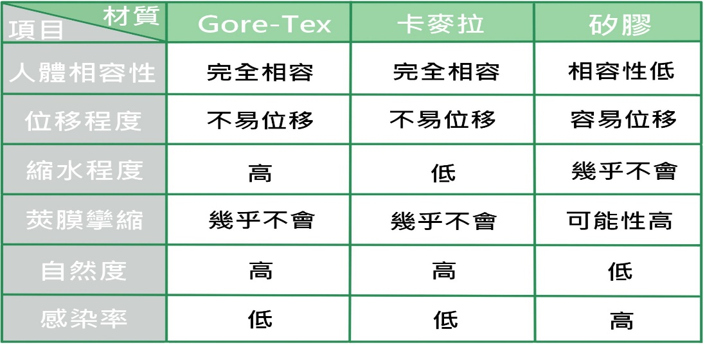

鼻子是人體五官中唯一的突出物，最能吸引他人的目光焦點，您可以發現當我們判斷一個人的臉「立不立體」時，鼻子的高挺程度往往是影響的主因。
一般來說常見的鼻子整形的範圍可區分為四個部份，即鼻樑、鼻骨、鼻頭以及鼻翼；鼻子問題不見得都同時存在，但是卻都可以藉由整形美容手術來改善，畢竟有時候鼻子看起來「怪怪的」，隆鼻不見得可以改善，對症下藥的修整，小小的修改也可以有大大的效果！
鼻樑過低，甚至完全沒有鼻樑，是東方人最頭痛的問題，由於基因的關係，東方人臉部輪廓已經不怎麼明顯了，若再加上低鼻樑，則會造成雙眼間距過寬，看似不精明的模樣。此時的改善重點則是植入人工鼻骨墊高鼻樑，在視覺效應上可將鼻樑的寬度變窄、並讓雙眼看起來更有神。至於鼻樑要墊得多高則需視個人條件而定，高不見得好，合乎比例才是最完美的，況且除了墊高鼻樑之外，在填入人工軟骨的同時亦需注意這個軟骨的長度是否適合你的臉型？否則即使墊高了鼻樑，卻讓鼻子看起來短小，仍舊是沒有達到美化鼻子的目的。
鼻骨的修整最常見的是自鼻樑算起於鼻骨1/3處有一明顯的突起，及一般俗稱的「希臘鼻」，此種特徵較常見於西方人，東方人較為少有，通常這類的鼻子鼻樑皆已有相當的高度，因此治療方式多將突出的鼻骨磨平，讓鼻骨高挺且平直。
而東方人常見的則是鼻骨根部過寬，從正面看來鼻樑低，從側面看卻又不失高度，往往造成整個鼻子看起來大而呆板，其治療方式可做鼻骨矯正手術，縮小鼻根部的距離，則可將寬大的鼻樑修窄，展現出優美的鼻型。
另外，鼻骨不正的情形也相當多，有些人是因為先天所形成的鼻骨歪斜，有些則是年紀輕時不小心所撞歪的。
有鼻頭修整的需求者往往是鼻子已具有相當的優勢條件，而想要讓鼻頭更翹挺可愛者，通常是選擇使用自體的軟骨組織或人工軟骨植入鼻頭部位，墊高鼻頭的高度。唯需注意的是若使用自體軟骨組織填入，則可能產生自體組織被吸收的情形。
俗稱的「蓮霧鼻」則是因鼻樑低且兩側鼻翼過於肥厚而造成鼻子過大的現象，此時光做隆鼻手術改善的效果不大，最好能將過於肥厚的鼻翼組織稍加修減，減少鼻子的體積，同時還可以縮小鼻孔，讓原本粗獷的鼻子變得較為秀氣。
隆鼻的植入物大致分為3種：自體植入物、異體軟骨、人工義鼻。
自體植入
所謂自體植入物包含：肋骨、耳軟骨、鼻中膈、肌膜、脂肪、真皮，讓〝自己的東西〞，做更有效益的使用，這樣做也大大降低了鼻子產生異物排斥的反應。
異體軟骨
是將捐贈者的軟骨，經高劑量的珈瑪射線做處理之後使用到鼻子上，效果大致上和自體軟骨沒什麼不同。
人工義鼻
Gore-Tex、卡麥拉、矽膠，這幾種植入物都被廣泛運用在隆鼻手術中。
1.一周內每天冰敷
2.術後三周，每天換藥兩次(清潔傷口並擦上藥膏)
3.定時服用醫師所開立之消炎藥
4.術後避免碰撞或壓迫鼻子
5.術後一周內不要趴睡
6.術後一個月內，不要戴眼鏡避免壓迫鼻子
7.按時回診確認隆鼻術後效果
治療前
治療後
治療前
治療後
治療前
治療後
治療前
治療後
治療前
治療後
治療前
治療後